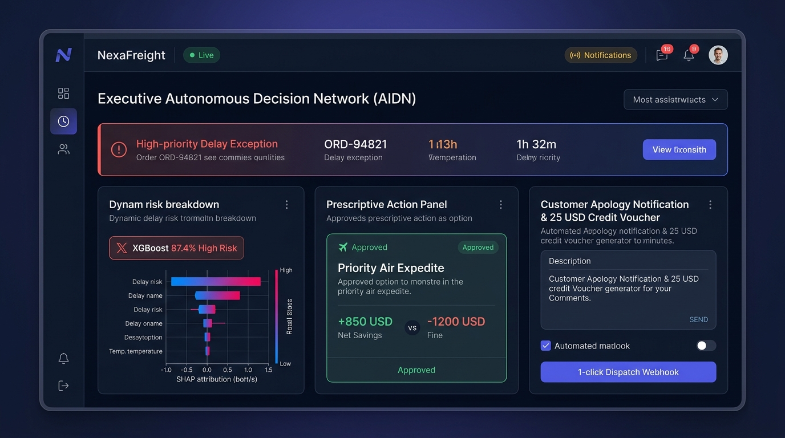
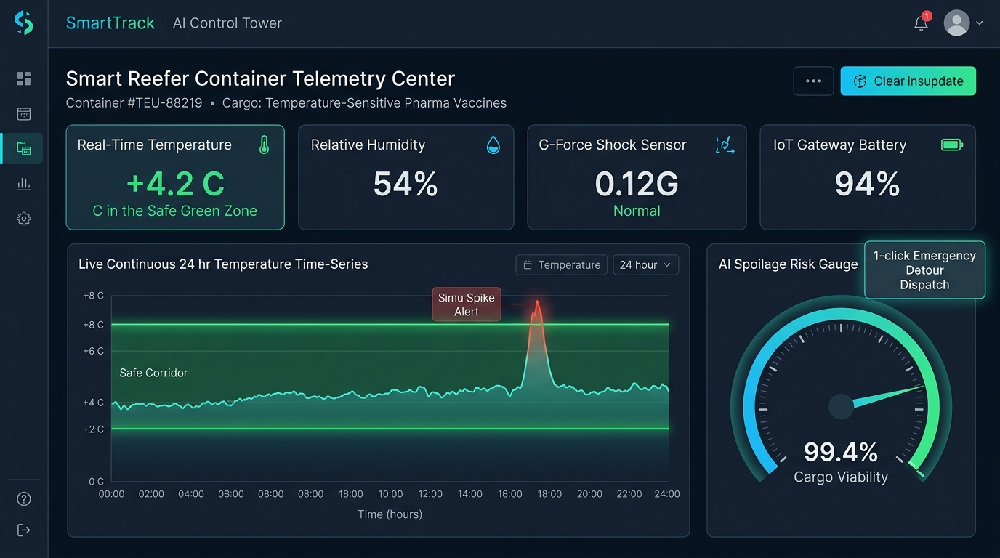
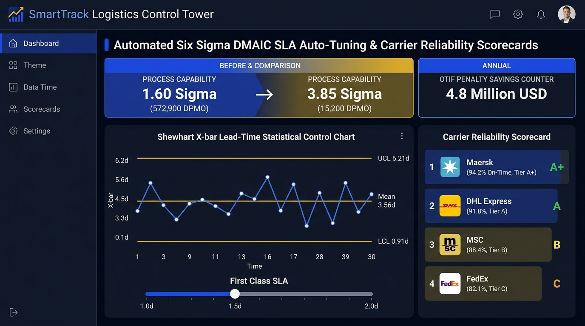
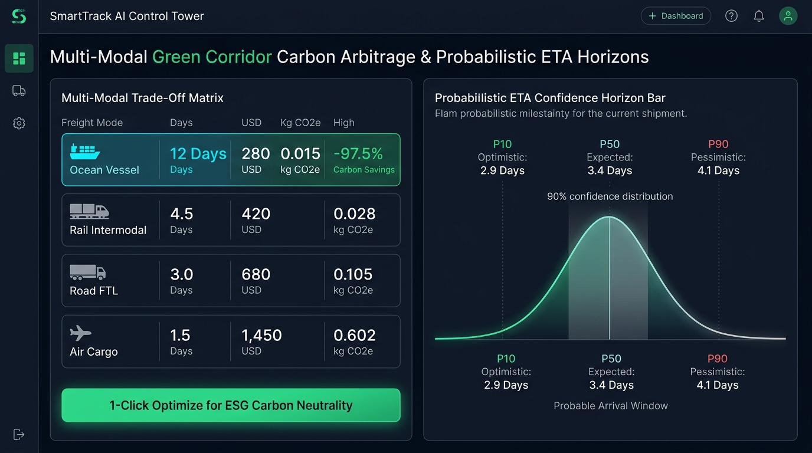

Automated Action Center for high-risk shipments ($P \ge 75\%$). Shows XGBoost 87.4% High Risk with SHAP attribution bars, Priority Air Expedite approval (+$850 USD Net Savings vs -$1200 fine), and automated customer apology delay notice with a $25 USD credit voucher.

Smart Reefer Container Telemetry Center for temperature-sensitive cargo. Displays live temperature (+4.2°C inside safe +2°C to +8°C zone), humidity (54%), shock sensor (0.12G), 24h continuous thermal curve, and AI Spoilage Risk Gauge (99.4% Cargo Viability).

Automated DMAIC optimization banner showing capability jumping from 1.60σ (572,900 DPMO) to 3.85σ (15,200 DPMO) with $4.8M annual OTIF fine savings. Interactive Shewhart X-bar control chart and carrier reliability ranking matrix (Maersk A+, DHL Express A, MSC B, FedEx C).

Multi-modal trade-off matrix comparing Ocean Vessel (-97.5% CO2, $280, 12d), Rail, Road, and Air Cargo with 1-click ESG Carbon Neutrality optimization. Features a 90% confidence bell curve with Probabilistic ETA [P10: 2.9d, P50: 3.4d, P90: 4.1d].